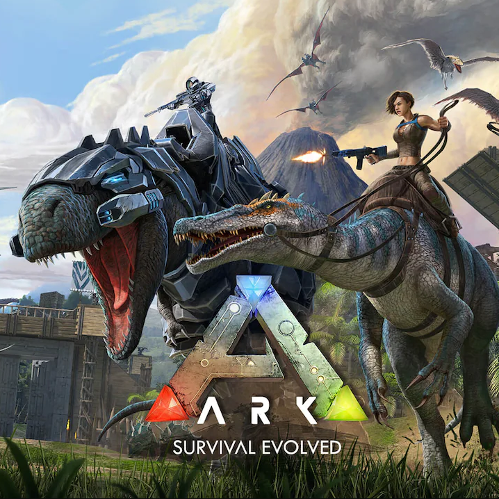
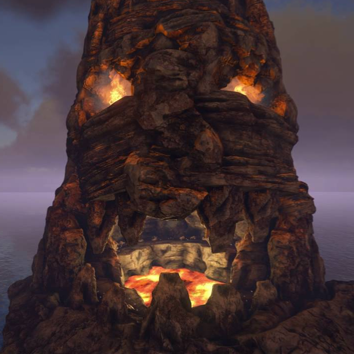
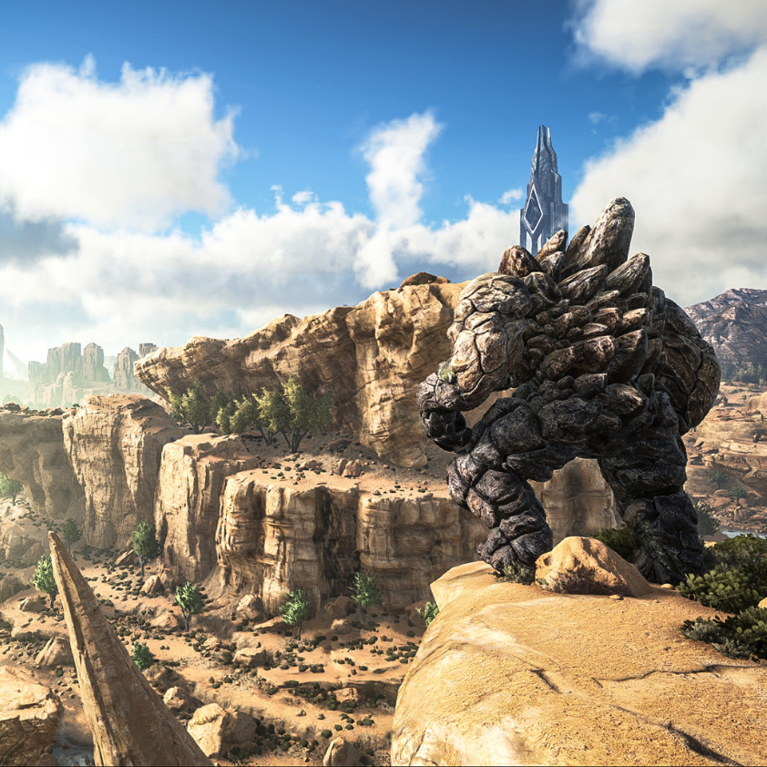

ARK: Extinction
This map, set on Ravaged Earth rather than an ARK up in space, forces players to survive an Earth unfamiliar to us: one of strange features and stranger creatures. In the center of the map lies an abandoned city, usually referred to as the Great City or Sanctuary. It is the remains of some great technologically advanced civilization, the same one that built the ARKs.
Mapas populares
-

ARK: The Island
-

ARK: The Center
-

ARK: Scorched Earth
-

ARK: Ragnarok
-

ARK: Genesis pt.1
-

ARK: Valguero
-

ARK: Genesis pt.2
-

ARK: Aberration